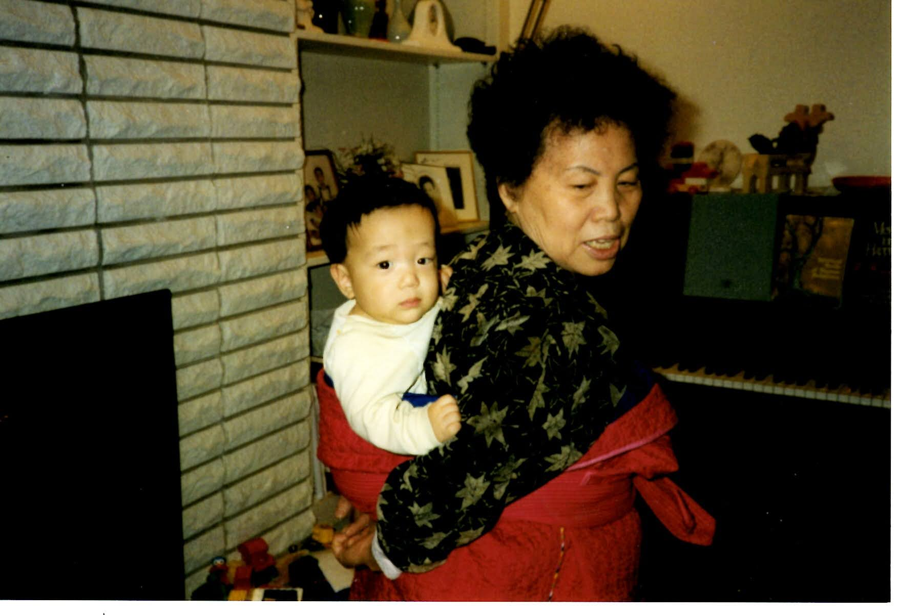

On official records, my mother’s birthday is listed as 20 February 1935
That is incorrect.
The year should be 1932 and furthermore, the date is according to the Lunar Calendar.
So the actual date, according to the Julian Calendar is 26 March 1932. HK Observatory
My father’s birthday is recorded as, 12 February 1930, we believe the year is correct.
So his Gregorian calendar birthday is 11 March 1930. 1930
The difference in birthday is due to 2 reasons.
First, the impact of man-made war.
Second, a tradition of using old, agriculture, focused lunar calendar.
When North Korean refugees were allowed to re-register in South Korea, many chose to and amended their birth year. 2-3 years was common since that was the length of the Korean War1
In addition my mother was known as 황현실 黃賢實2 until she was 42 years old.
Then she was know as 강현실 姜賢實 until the latter part of her life.
She then became 황현실 黃賢實 again, for the last dozen years, as she associated with fellow Koreans.

She has navigated through changes, some that were catastrophic, in this life.
As well as variations in counting years and birthdays and a place to call a home.
Although she didn’t talk in detail, there must have been times when she struggled because she was a stranger, a language barrier, and a fatherless.
But to us and to the Hwang Family, she never changed.
To Hwang clan, she was a daughter, grand daughter, and a great grand daughter.
For us, she was a wife, our mother, a grandmother and a great-grandmother.
In the end, all of struggles and discrepancies were swallowed up and wiped away and her essence is what remains.
A daughter of God, sent to Hwang Family as the eldest daughter.
To help them through the occupation, communism and the war times.
A faithful follower of Christ, married into the Kang Family.
To guide them through the post war poverty, to search and find the truth, and to re-establish the family in the land of promise.
Thank you, God in Heaven for sending our dear mother.